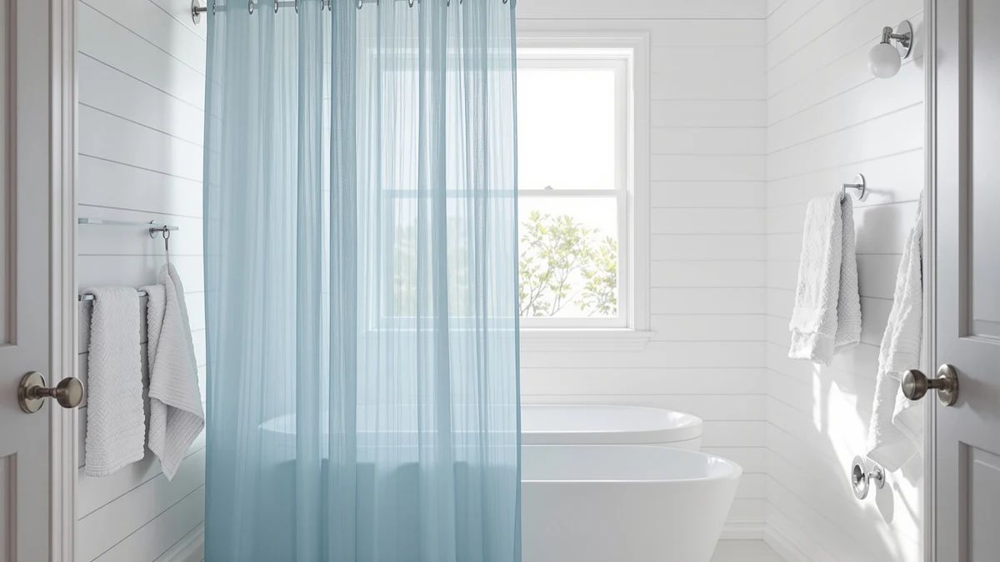

The Best Shower Curtains Under $50 (2026)
Prices and picks verified as of September 2026. Independent, reader-supported reviews.


Quick Answer
The best shower curtains under $50 do not force a choice between decent fabric and a fair price, and the seven picks below range from $5.91 to $25.99 without a mildew smell or a curtain that clings to your legs mid-shower. If your existing panel still looks fine but the rings are rusted, cracked, or missing, the Goowin Shower Curtain Hooks 12 pack fixes that for less than the price of a coffee, and the no-hook curtains further down solve the same rust problem for good.
Our pick: Goowin Shower Curtain Hooks 12, $5.91 Check Price on Amazon
Bottom line: our top pick is the Goowin Shower Curtain Hooks at $5.91. The best budget option is the Mrs Awesome No Hook Shower Curtain with Snap-in Liner Less at $16.99.
Things to Know Before You Buy
- No-hook designs dominate this list for a reason. Four of the seven picks below use a buttonhole top hem that slides directly onto the rod, skipping separate rings entirely. See our best hookless shower curtains guide for more of that style.
- Hardware fails before fabric usually does. A cracked or rusted hook is often the real problem, not the curtain itself, which is why the Goowin 12-pack tops this list of the best shower curtains under $50 at $5.91 instead of a full panel.
- Sizes cluster around 71 to 75 inches. Most picks here run 71 by 74 or 72 by 75 inches, so measure your rod before ordering if your bathroom uses an oversized or clawfoot tub setup.
- Polyester and PEVA cost less than microfiber or ruffled styles. Price in this guide tracks fabric and design more than brand, running from $16.99 for a plain no-hook panel up to $25.99 for the ruffled White Ruffle pick.
- A liner still matters for a bathtub setup. Even a water-resistant polyester curtain benefits from a liner when water pools at the bottom of a tub instead of draining through a stall floor. Our best shower curtains for mold and mildew guide covers that scenario in more depth.
The best shower curtains under $50 need to do two things well: keep water where it belongs and survive more than a few months of daily use without curling at the edges or picking up a mildew smell. You do not need to spend $80 on a designer panel to get both, and the seven picks in this guide prove it, ranging from a $5.91 hook set up to a $25.99 ruffled curtain.
We looked at both full curtains and the hardware that holds them up, because a worn-out set of rings causes as many bathroom headaches as a moldy panel does. That is why the Goowin Shower Curtain Hooks 12 pack takes the top spot here instead of a fabric curtain: it solves the most common complaint at the lowest price, and it pairs with whichever panel you already own or pick up from the list below.
For a full curtain, the Mrs Awesome No Hook Shower and three other no-hook panels in this guide skip separate rings altogether, while the River Dream, Colorful Star, and White Ruffle picks cover microfiber, waffle texture, and a farmhouse-style ruffle for anyone who wants more than a flat polyester sheet. Every price below sits under $26, which leaves room in a $50 budget to add a rod or liner if your bathroom needs one.
Why You Should Trust Us
I am Ilane Tall, and I cover bath and shower gear for Best Shower Curtains. For this guide to the best shower curtains under $50, I focused on the questions that actually decide whether a curtain earns its keep at this price: does it need a separate liner, does the hook or no-hook design hold up under daily use, and how does each price compare against similar builds in the same guide.
We do not own or install every product we cover, so we do not claim to have personally compared each one, and we do not run a fake testing lab. Instead, we research each listing closely, cross-check the stated material and dimensions against the current Amazon listing, and weigh price against what it actually buys, whether that is a no-hook hem, a heavier microfiber weave, or a decorative ruffle.
How We Picked
We started with a wide list of candidates for the best shower curtains under $50, covering both full panels and the hardware that hangs them. We narrowed the field by price, fabric, and how clearly each listing described its actual material and size rather than relying on vague marketing language.
We also wanted a real spread of options instead of seven near-identical polyester sheets. That is why this guide mixes a hook 12-pack, four no-hook panels in different fabrics and textures, and a ruffled design, so shoppers with different bathrooms and different problems can find a fit. We weighed how each pick's stated size matched a standard 71 to 75 inch opening, since a curtain built for one bathroom is a poor fit for another no matter how good the fabric looks.
How We Compared
We compared each pick in this guide on the same set of facts: listed material, size, current price, and hook or no-hook design, all pulled directly from the live Amazon listing rather than promotional copy. Where a panel advertised a specific size, such as the Colorful Star picks' 72 by 75 inch dimensions, we checked that figure against the standard 71 to 74 inch range used elsewhere in this guide.
We also weighed price against what it actually buys within the best shower curtains under $50 category. A $16.99 no-hook curtain and a $25.99 ruffled curtain both keep water inside the shower, so the price gap has to come from somewhere, whether that is a decorative tier, a heavier fabric, or a larger cut. Reviewers consistently note whether a panel wrinkles straight out of the packaging or whether a no-hook hem holds its shape over repeated use, and we folded that owner feedback into the pros and cons below alongside the raw specs.
Our Picks

Goowin Shower Curtain Hooks 12
What we like
- Full 12-pack matches a standard shower curtain rod without buying two sets
- Lowest price of any pick in this guide at $5.91
- A quick swap that fixes a sliding or squeaking curtain without replacing the whole panel
Flaws but not dealbreakers
- Does not include a curtain, liner, or rod, so it only solves the hook problem
- Fixed style and finish, so an oversized or extra-long panel may need a different set
| Material | Polyester / PEVA |
| Size | Classic - 12 Pack |
The Goowin Shower Curtain Hooks 12 pack takes the top spot in this guide because it solves the complaint that trips up more shower curtains than a worn fabric ever does: broken or rusted hardware. A full set of 12 hooks covers a standard rod in one purchase, and at $5.91 it costs less than almost any other single item in this roundup.
If your current curtain still looks fine but slides unevenly, squeaks against the rod, or lost a ring down the drain, replacing the hardware costs less than a new curtain and takes only a few minutes. Pair it with any of the fabric panels below, including the no-hook options if you would rather skip separate hardware altogether, and the total still lands well under $50.

Mrs Awesome No Hook Shower
What we like
- No-hook buttonhole top slides directly onto a rod without separate rings
- 71 by 74 inch size fits a standard tub or stall opening
- Polyester and PEVA build resists mildew better than plain vinyl
Flaws but not dealbreakers
- Fixed 71 by 74 inch size will not suit an extra-wide or extra-tall opening
- Buttonhole hem takes a little longer to thread onto a rod than clipping on hooks
| Material | Polyester / PEVA |
| Size | 71"W x 74"L (Pack of 1) |
The Mrs Awesome No Hook Shower is the runner-up here because it removes the one part of a shower curtain setup people replace most often: the rings. Instead of separate hooks, the top hem has reinforced buttonholes that slide directly onto the rod, and at $16.99 it costs only a few dollars more than a standard curtain and hook set bought separately.
Reviewers consistently note that the polyester and PEVA build sheds water well enough to skip a separate liner in a stall shower, though a bathtub setup still benefits from one since water pools at the bottom of the panel. At 71 by 74 inches, it fits most standard openings, but measure first if your rod runs wider than a typical tub wall.

River Dream No Hook Hotel
What we like
- Microfiber fabric has a heavier drape than the polyester and PEVA picks nearby
- No-hook top hem still slides directly onto a standard rod
- 71 by 74 inch size matches most tub and stall openings
Flaws but not dealbreakers
- Costs about a dollar more than the comparable polyester no-hook option in this guide
- Heavier fabric takes longer to dry between showers than a lighter PEVA panel
| Material | Microfiber |
| Size | 71"W x 74"L (Pack of 1) |
The River Dream No Hook Hotel earns an also-great slot by trading the lighter polyester build most picks in this guide use for a heavier microfiber fabric, the kind more commonly seen in hotel bathrooms. At $17.99, it costs about a dollar more than the Mrs Awesome panel, and that difference buys a curtain with more weight and a fuller drape once it is hung.
The tradeoff is drying time: a heavier microfiber panel holds more water after a shower than a thin PEVA sheet, so it does best in a bathroom with decent airflow or an exhaust fan. Owners report the no-hook top hem holds up the same way as the other buttonhole panels in this guide, sliding onto a standard rod without separate rings.

Colorful Star No Hook Waffle
What we like
- Waffle weave texture reads as a design upgrade without a loud pattern
- 72 by 75 inch size covers a slightly taller opening than the standard 71 by 74 options
- No-hook top hem skips separate rings like the other picks nearby
Flaws but not dealbreakers
- Costs more than the Mrs Awesome or River Dream picks despite a similar polyester build
- Textured weave shows water spots more visibly than a smooth panel between washes
| Material | Polyester / PEVA |
| Size | 72"W x 75"L (Pack of 1) |
The Colorful Star No Hook Waffle is the budget pick for anyone who wants texture instead of a flat, printed surface but still wants to keep the total under $25. At $22.99, it is one of the pricier picks in this guide, though it still lands well inside the $50 ceiling this roundup is built around.
The 72 by 75 inch size runs slightly larger than the 71 by 74 inch standard used by most of the other panels here, which helps on a taller bathtub wall. The waffle texture does show water spots a little more visibly than a smooth polyester panel, so it benefits from a quick wipe-down after a shower rather than air-drying alone.

Colorful Star No Hook Shower
What we like
- Smooth polyester and PEVA finish instead of a textured weave
- Matches the same 72 by 75 inch size as the Waffle pick above
- No-hook top hem slides onto a standard rod without separate rings
Flaws but not dealbreakers
- Priced the same as the more distinctive Waffle pick despite a plainer finish
- Smooth surface shows less visual texture than the waffle option nearby
| Material | Polyester / PEVA |
| Size | 72"W x 75"L (Pack of 1) |
The Colorful Star No Hook Shower comes from the same maker as the Waffle pick above and shares its 72 by 75 inch size and $22.99 price, but swaps the textured weave for a smooth, flat finish. It suits anyone who wants the larger size and no-hook convenience without the waffle texture drawing attention to the panel itself.
Because it shares a size and price with its waffle sibling, the choice between the two comes down to look rather than function. Reviewers consistently note both panels hang and dry about the same way, so pick the smooth finish if you would rather the curtain blend into the room than stand out.

White Ruffle Shower Curtain for
What we like
- Ruffled tiers add a decorative, farmhouse-style look the plain panels in this guide do not offer
- 72 by 72 inch square size suits a standard stall or tub opening
- Polyester and PEVA build resists mildew the same as the other picks here
Flaws but not dealbreakers
- Highest price in this guide at $25.99
- Ruffled tiers take longer to dry fully than a flat panel, since folds trap water
| Material | Polyester / PEVA |
| Size | 72"W x 72"L (Pack of 1) |
The White Ruffle Shower Curtain is the priciest pick in this guide at $25.99, and it earns that price with a ruffled, tiered design that none of the flatter panels nearby attempt. It suits a farmhouse or cottage-style bathroom where a plain polyester sheet would look out of place.
The 72 by 72 inch square size fits a standard opening, but the ruffled tiers hold onto more water than a flat panel after a shower, so a bathroom with strong airflow keeps it drying faster between uses. Owners report the ruffles keep their shape wash after wash rather than flattening out, which matters most for a decorative pick like this one.

SORTTO No Hook Slub Textured
What we like
- Slub-textured weave mimics the look of linen without the higher price or care needs
- No-hook top hem matches the convenience of the other buttonhole picks in this guide
- Priced at $17.99, tied for one of the more affordable full curtains here
Flaws but not dealbreakers
- Slub texture is a look-alike for linen, not the real fabric, so it will not feel identical
- 71 by 74 inch size is fixed, so it will not suit an oversized opening
| Material | Polyester / PEVA |
| Size | 71"W x 74"L (Pack of 1) |
The SORTTO No Hook Slub Textured curtain gives a linen-inspired look to shoppers who do not want to deal with a real linen panel's higher price or extra care. At $17.99, it costs less than the ruffled or waffle picks above while still adding visible texture instead of a flat surface.
The slub weave reads as linen from a few feet away, though it is still a polyester and PEVA blend underneath, so it keeps the same mildew resistance and quick-dry advantage the rest of this guide relies on. If you want the real fabric instead, our best linen shower curtains guide covers that option directly.
Quick Comparison
| Product | Material | Price | Rating | Best for | Get it |
|---|---|---|---|---|---|
| Goowin Shower Curtain Hooks 12 | Polyester / PEVA | $5.91 | 4 | Fixing rusted or broken rings | View on Amazon → |
| Mrs Awesome No Hook Shower | Polyester / PEVA | $16.99 | 4 | Skipping separate curtain hooks | View on Amazon → |
| River Dream No Hook Hotel | Microfiber | $17.99 | 4 | A heavier, hotel-style drape | View on Amazon → |
| Colorful Star No Hook Waffle | Polyester / PEVA | $22.99 | 4 | Textured waffle-weave design | View on Amazon → |
| Colorful Star No Hook Shower | Polyester / PEVA | $22.99 | 4 | Same size as the Waffle pick, smoother finish | View on Amazon → |
| White Ruffle Shower Curtain for | Polyester / PEVA | $25.99 | 4 | Decorative ruffled, farmhouse look | View on Amazon → |
| SORTTO No Hook Slub Textured | Polyester / PEVA | $17.99 | 4 | Linen-look texture at a lower price | View on Amazon → |
The Competition
We passed over plain vinyl curtains without any antimicrobial treatment, since untreated vinyl tends to develop a mildew smell faster than the polyester and PEVA blends featured in this guide, even at a similar price. We also skipped extra-long and extra-wide panels for this list, since those sizes serve a different opening than the standard 71 by 74 inch space most of these picks are built for; see our best extra-long shower curtains and best extra-wide shower curtains guides if your bathroom needs one of those.
We also left out clear vinyl curtains and cotton panels that need a separate liner, since adding a liner on top of a $25 to $30 curtain pushes the total cost past the $50 ceiling this guide is built around. After comparing price, fabric, and hook design across the full field, the best shower curtains under $50 in this guide are anchored by the Goowin Shower Curtain Hooks 12 pack for anyone patching up an existing setup, with the Mrs Awesome No Hook Shower as the strongest full-panel pick for a fresh start.
Frequently Asked Questions
Do no-hook shower curtains work as well as ones with rings?
Yes. A no-hook shower curtain replaces the rings with reinforced buttonholes sewn into the top hem, so the panel slides directly onto the rod. Several of the best shower curtains under $50 in this guide, including the Mrs Awesome No Hook Shower, use that design, and reviewers consistently note it holds up the same way a hooked panel does over normal use.
What is the cheapest way to fix a shower curtain that keeps sliding?
Check whether the rings are the problem before replacing the whole panel. The Goowin Shower Curtain Hooks 12 pack costs $5.91 and swaps a full set of rings in a few minutes, which is often cheaper than buying a new curtain outright. Our shower curtain hooks and rings guide covers more options if the standard 12-pack does not fit your rod.
Do I need a separate liner with a polyester or PEVA shower curtain?
Most of the polyester and PEVA panels in this guide are water-resistant enough to hang alone in a stall shower without a separate liner. A bathtub setup still benefits from one, since water pools at the bottom of the curtain during a shower. See our best shower curtains for mold and mildew guide for picks built around extra moisture control.